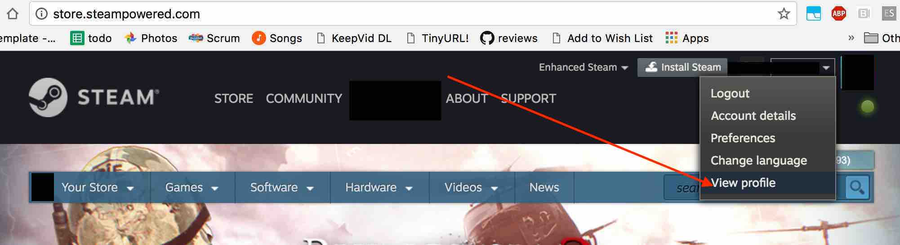
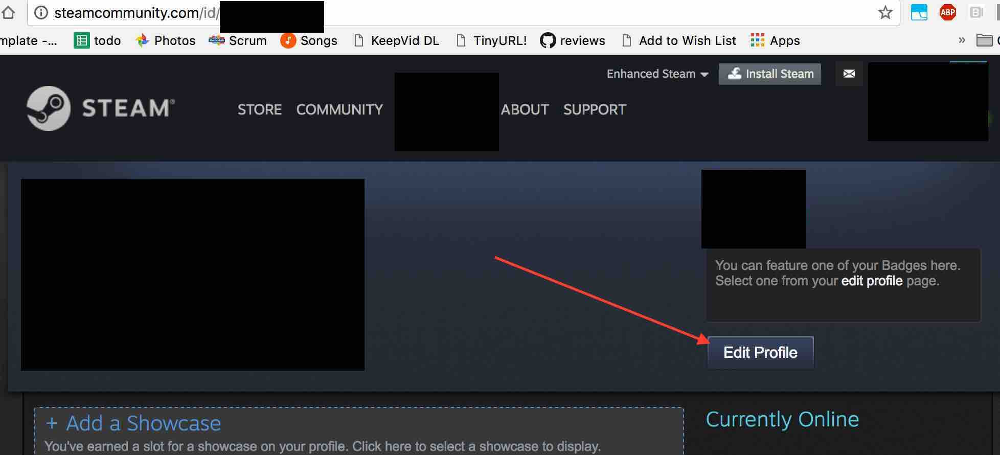
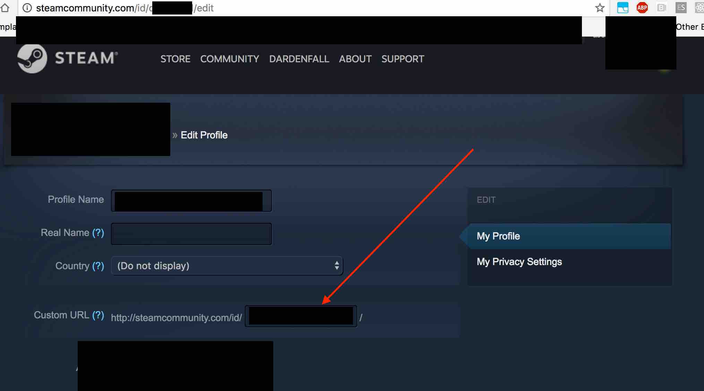

Your steam profile url is the url for your steam profile (duh) that's
visible to the world. If you have a steam account, there is a page on
steamcommunity.com with your user. If you haven't already set your
personal url, then your page will have a random number inserted for your
id. You can use that url or follow the directions below to set up your
own.
-
Go to store.steampowered.com
and click the profile dropdown in the upper right. Click view profile.

-
On your profile page click edit profile

-
Scroll down to custom url and insert your steam ID or some other
string. Don't forget to save
